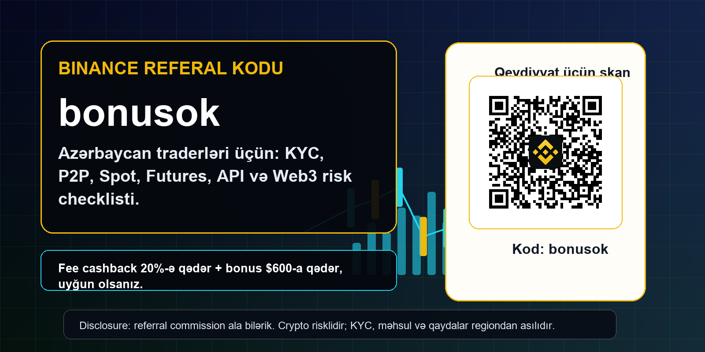
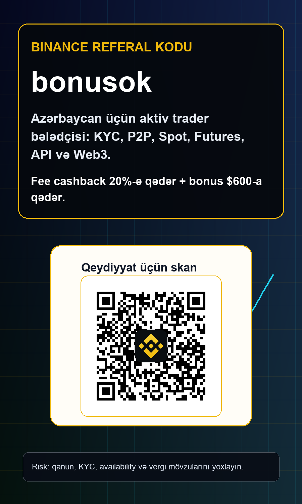
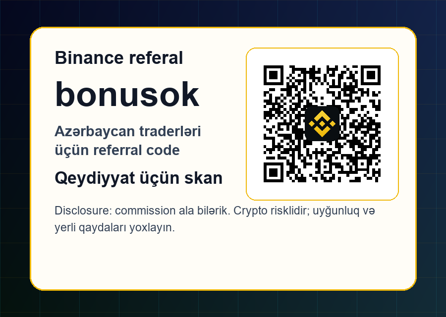

Disclosure: bu səhifədə referral link var; link vasitəsilə qeydiyyat və ya ticarət etsəniz, commission ala bilərik. Crypto volatile-dir. KYC, bonus, product availability və yerli qaydalar regiondan asılı olaraq dəyişir.
Binance referal kodu bonusok: Azərbaycan traderləri üçün aktiv ticarət bələdçisi
Azərbaycan auditoriyası üçün Binance referal kodu bonusok bələdçisi: fee cashback, KYC, P2P, Spot, Futures, Margin, Earn, API, Web3, risk və yerli uyğunluq checklisti. Bu maliyyə, hüquqi və ya vergi məsləhəti deyil. İstifadədən əvvəl official Binance terms, Azərbaycan üzrə qaydalar və şəxsi risk profilinizi yoxlayın.


Şəkil measured layout ilə hazırlanıb; real bonusok QR kodu renderdən sonra lokal olaraq yerləşdirilib.
Qısa cavab: bonusok nədir?
Binance referal kodu bonusok yeni hesab açan istifadəçinin qeydiyyat linkində ref=bonusok parametrinin olması deməkdir. Bu səhifədəki QR kodu skan edəndə açılan ünvan accounts.binance.com/register?ref=bonusok olur. Qeydiyyata başlamazdan əvvəl URL-də bu parametrin qaldığını, hesab açıldıqdan sonra isə referral və ya rewards bölməsində kodun tətbiq edildiyini yoxlamaq lazımdır. Hesab artıq yaradıldıqdan sonra referral kodunu dəyişmək çox vaxt mümkün olmur, ona görə ilk klik vacibdir.
Təklif şərtlidir: uyğun istifadəçilər komissiya cashback-i 20%-ə qədər və bonusları 600 dollara qədər görə bilər, amma bu nə zəmanətli gəlir, nə də hər ölkə və hər məhsul üçün avtomatik hüquqdur. KYC, region, kampaniya müddəti, məhsul tipi və Binance-in aktual qaydaları nəticəni dəyişə bilər. Bu material maliyyə və ya hüquqi məsləhət deyil; məqsəd aktiv traderə düzgün giriş checklisti verməkdir.
Niyə Azərbaycan auditoriyası üçün ayrıca yanaşma lazımdır
Azərbaycanlı istifadəçilər çox vaxt kripto terminlərini qarışıq axtarır: Binance referal kodu, Binance referral code Azerbaijan, dəvət kodu, promo kod, bonusok, komissiya endirimi, P2P USDT, spot ticarət, futures, API, Web3 və Binance qeydiyyat. Bu səbəbdən səhifə həm Azərbaycan dilində izah verir, həm də real axtarışda işlənən ingilis terminlərini saxlayır. SEO üçün məna yalnız açar söz deyil; istifadəçi niyyətinə cavab verməkdir.
Azərbaycan bazarında əsas məsələ təkcə bonus deyil. Bank ödənişləri, manatla cashflow, kart və P2P marşrutları, KYC sənədləri, vergi və əməliyyat tarixçəsi, həmçinin virtual aktivlər üzrə tənzimləmə mühiti diqqətlə izlənməlidir. Aktiv trader səhifədən yalnız link götürməməlidir; o, risk və uyğunluq baxımından öz qərarını yoxlamalıdır.
Kim üçün uyğundur
Bu bələdçi təsadüfi bonus axtaranlar üçün deyil, daha çox real ticarət həcmi yarada bilən istifadəçilər üçündür. Scalping, swing trading, spot rotasiya, portfel rebalancing, P2P arbitrage, API order routing və ya bot istifadə edən trader üçün komissiya xətti PnL-də görünən xərclərdən biridir. Bonusok kodu bu xətti azaltmağa kömək edə bilər, amma zəif strategiyanı yaxşı strategiyaya çevirmir.
Uyğun oxucu öz adına hesab açır, KYC-ni qanuni sənədlərlə keçir, saxta lokasiya və ya VPN bypass axtarmır, ilk depoziti kiçik testlə edir, risk budget yazır və yerli qaydaları oxuyur. Əgər məqsəd yalnız pulsuz bonus almaqdırsa, bu səhifə çox uzun görünə bilər. Bizim üçün dəyərli referral, 7, 30 və 90 gün sonra da intizamlı şəkildə ticarət edən istifadəçidir.
Azərbaycan tənzimləmə konteksti
Azərbaycan Mərkəzi Bankının sandbox reyestrində virtual aktivlərlə bağlı Kriptobroker pilotu kimi məhdud istifadəçi qrupu üçün test edilən layihələr görünür. Bu, virtual aktiv mövzusunun maliyyə innovasiyası kimi izlənildiyini göstərir, amma bu, hər xarici platformanın avtomatik lokal lisenziyası və ya bütün Binance məhsullarının Azərbaycanda təsdiqi demək deyil. İstifadəçi öz hesabında mövcudluğu və lokal hüquqi vəziyyəti ayrıca yoxlamalıdır.
2026-cı ilin yayında açıq mənbələrdə Azərbaycan üçün virtual asset service providers barədə qanun layihəsinin müzakirədə olduğu, kripto biznesləri üçün Mərkəzi Bank lisenziyası və AML/KYC tələbləri gözlənildiyi yazıldı. Bu proses dəyişkəndir. Ona görə səhifədə qəti hüquqi iddia vermirik: aktiv trader öz bankı, vergi məsləhətçisi, Mərkəzi Bank materialları və rəsmi qaydalarla vəziyyəti yeniləməlidir.
Marja, CFD və leverage barədə ehtiyat
Mərkəzi Bankın marja ticarəti qaydalarında baza aktivi kriptovalyuta olan fərq müqavilələri üçün xüsusi leverage limiti qeyd olunur. Bu, yerli investisiya xidmətləri kontekstində kripto əsaslı risklərin ayrıca qiymətləndirildiyini göstərən vacib siqnaldır. Binance Futures və Margin kimi məhsullar isə regiona və hesab uyğunluğuna görə fərqli ola bilər. Menyuda məhsulu görmək onu hər kəs üçün uyğun etmir.
Leverage istifadə edən trader liquidation price, maintenance margin, funding rate, auto-deleveraging, stop order slippage və tax record kimi mövzuları bilməlidir. Başlayan istifadəçi üçün ən təhlükəsiz yol adətən Spot orderləri kiçik ölçüdə test etmək, sonra daha mürəkkəb məhsulları öyrənməkdir. Referral cashback leverage riskini azaltmır; yalnız uyğun olduqda komissiya xərclərini yumşalda bilər.
2026 iyul Binance yenilikləri: nəyi izləmək lazımdır
Binance iyul ayında aktiv traderlər üçün bir neçə vacib siqnal verdi: bStocks trading pairs əlavə edildi, Web3 API və Prediction Markets API kimi developer və advanced-user mövzuları gündəmdə qaldı, delisting və spot pair removal xəbərdarlıqları isə bot və margin istifadəçiləri üçün risk checklistini yenilədi. Bu yenilikləri referral səhifəsinə daxil etməyimizin səbəbi sadədir: aktiv trader yalnız qeydiyyat koduna baxmır, platformanın gündəlik əməliyyat dəyişikliklərini də izləyir.
Yeni trading pair imkan yarada bilər, amma liquidity və spread ilk saatlarda çox dəyişkən ola bilər. Delisting və removal notice isə mövcud botları, limit orderləri, Earn və ya margin planlarını poza bilər. Azərbaycanlı trader mobil internet, P2P cashflow və iş saatları arasında trade edirsə, announcement center onun üçün xəbər lentindən çox risk idarəetmə alətidir.
bStocks və ənənəvi bazar niyyəti
Binance-in bStocks trading pair xəbəri kripto ilə ənənəvi səhm mövzularının eyni hesabda izlənməsinə marağı artırır. Amma bu məhsullar yalnız uyğun istifadəçilər üçün ola bilər və region məhdudiyyətləri dəyişə bilər. Azərbaycan auditoriyası üçün bunu reklam kimi yox, sual kimi vermək lazımdır: hesabınızda bu məhsul mövcuddurmu, şərtləri oxumusunuzmu, vergi və risk profiliniz buna uyğundurmu?
Aktiv trader üçün bStocks mövzusu portfel diversifikasiyası, extended hours, liquidity və qiymət izləmə baxımından maraqlı ola bilər. Lakin səhmlə bağlı tokenləşdirilmiş exposure, custody, corporate actions və platforma qaydaları ayrıca risk yaradır. Bonusok referral kodu qeydiyyat mərhələsində kömək edə bilər, amma məhsul seçimini əvəz etmir.
Qeydiyyat checklisti
Birinci addım: yalnız rəsmi Binance domainini və ya bu səhifədəki sponsored referral linkini açın. İkinci addım: URL-də ref=bonusok parametrini yoxlayın. Üçüncü addım: güclü parol, 2FA app, anti-phishing code və withdrawal whitelist qurun. Dördüncü addım: KYC sənədlərinizi öz adınızla hazırlayın. Beşinci addım: referral tətbiq olunmadan depozit etməyin.
Altıncı addım: ödəniş marşrutunu və minimum məbləğləri kiçik testlə yoxlayın. Yeddinci addım: ilk orderi Spot bazarında kiçik həcmdə verin. Səkkizinci addım: trade history, deposit, withdrawal və P2P order record-larını necə export edəcəyinizi öyrənin. Doqquzuncu addım: yalnız bundan sonra Futures, Margin, API və bot mövzularına keçin.
P2P və manat cashflow
Azərbaycan istifadəçiləri üçün P2P USDT mövzusu praktik ola bilər, amma P2P sadə pul köçürməsi deyil. Counterparty risk, saxta ödəniş sübutu, chargeback, bank sorğusu, off-platform deal, üçüncü şəxs hesabı və AML sualları var. P2P istifadə edirsinizsə, yalnız platforma daxilində escrow və qaydalarla işləyin, Telegram və WhatsApp razılaşmalarından uzaq durun.
Bank hesabınızın izah edə bilmədiyiniz ödəniş axını ilə yüklənməsi uzunmüddətli problem yarada bilər. Aktiv trader cashflow-u peşəkar idarə edir: ödəniş qeydləri, order ID-lər, qarşı tərəfin adı, tarix, məbləğ, komissiya və səbəb saxlanılır. Bonus üçün tələsmək bu intizamı pozmamalıdır.
Fee cashback necə hesablanmalıdır
Əgər ayda bir neçə kiçik order edirsinizsə, cashback çox böyük fərq yaratmaya bilər. Amma yüksək volume, market making, scalping, grid, DCA rebalancing və ya API strategy istifadə edən trader üçün maker/taker fee yığılıb ciddi xərcə çevrilir. Bonusok kodu uyğunluq olduqda bu xərcin bir hissəsini geri qaytara bilər.
Sadə hesablama aparın: aylıq volume, ortalama fee, spread, slippage, funding, withdrawal cost və tax compliance xərci. Sonra potential cashback-i həmin rəqəmlərlə müqayisə edin. Əgər strategiya yalnız cashback hesabına müsbət görünürsə, ehtimal ki, strategiya zəifdir. Cashback sağlam risk planına əlavə optimizasiya kimi baxılmalıdır.
Spot, Futures, Margin və botlar
Spot bazarında siz aktiv alıb satırsınız. Futures və Margin isə borrowed exposure, liquidation və funding riskini əlavə edir. Trading Bots intizamlı execution verə bilər, amma səhv parametr və ya delisting notice-i görməmək botu riskə çevirə bilər. Aktiv trader botu işə salmazdan əvvəl pair status, minimum notional, tick size, step size və stop conditions yoxlayır.
Binance spot removal və margin delisting xəbərləri göstərir ki, bazar infrastrukturu dəyişir. Botunuz gecə işləyirsə, xəbərdarlıqdan sonra pair bağlana, order reject ola və ya liquidity dəyişə bilər. API istifadə edirsinizsə, withdrawal permission söndürülməli, IP whitelist qurulmalı və kiçik capital ilə test edilməlidir.
API və developer traderlər
Azərbaycanın texniki icmasında Python, JavaScript, TradingView webhook, spreadsheet modelləri və Telegram alert istifadə edən traderlər var. Binance API onlar üçün güclü alət ola bilər, amma API açarı bank kartı kimi qorunmalıdır. Trade permission ayrı, withdrawal permission bağlı, IP restriction aktiv, log monitoring və alertlər hazır olmalıdır.
exchangeInfo endpoint, rate limits, order status, precision, lot size və minimum notional kimi texniki detallar real pulla test edilməzdən əvvəl başa düşülməlidir. Yeni pair açıldıqda botu dərhal işə salmaq əvəzinə liquidity və slippage ölçün. API üstünlükdür, amma nəzarətsiz API riskin avtomatlaşdırılmasıdır.
Earn, stablecoin və idle capital
Binance Earn və stablecoin məhsulları boş capital üçün maraqlı görünə bilər, lakin APY zəmanətli deyil. Redemption müddəti, asset risk, platform risk, issuer risk və region availability dəyişə bilər. Azərbaycan istifadəçisi üçün əlavə olaraq bank və vergi qeydləri də əhəmiyyətlidir. Passive income ifadəsi real riskləri gizlətməməlidir.
Aktiv trader capital-ı bölür: trading float, tax reserve, stablecoin waiting capital, long-term custody və emergency cash. Hər şeyi bir exchange-də saxlamaq rahatdır, amma concentration risk yaradır. Referral kodu hesabın giriş qapısıdır; capital allocation isə davamlılığın əsasını təşkil edir.
Web3 və wallet riski
Binance Wallet Web3 API kimi yeniliklər developer və power-user auditoriyası üçün maraqlıdır. Lakin Web3-də risk fərqlidir: seed phrase, dApp approval, bridge, phishing, smart contract və wallet permission səhvləri support ticket ilə asan həll olunmaya bilər. Web3 istifadə edirsinizsə, kiçik capital, ayrı wallet və approval revoke vərdişi vacibdir.
Prediction Markets API və oxşar məhsullar eligibility və region qaydalarına bağlıdır. Announcement oxumaq məhsulun sizin hesabınızda əlçatan olduğunu sübut etmir. Hər yeni feature üçün üç sual verin: mənim regionumda uyğundurmu, hesabımda aktivdirmi, və riskini yazılı şəkildə başa düşmüşəmmi?
Təhlükəsizlik stack-i
Hesab təhlükəsizliyi referral kodundan əvvəl gəlir. Password manager, 2FA app, anti-phishing code, withdrawal whitelist, device review, email security və SIM-swap riskinə qarşı qoruma qurun. Sosial şəbəkələrdə PnL və balance screenshot paylaşmaq sizi hədəfə çevirə bilər. Heç bir dəstək əməkdaşı OTP, seed phrase və ya API secret istəməməlidir.
Telegram qruplarında fake support, fake airdrop, pump group və phishing link çox olur. Bot vendor API istəyirsə, permissions-i minimum saxlayın. Əgər hesabınız oğurlanarsa, fee cashback və bonus mənasız qalır. Peşəkar trader riskin yalnız bazarda deyil, operational security-də də olduğunu bilir.
Vergi və əməliyyat qeydləri
Kripto əməliyyatlarının vergiyə necə düşməsi fərdi vəziyyətdən asılıdır və bu səhifə vergi məsləhəti deyil. Amma aktiv trader üçün record keeping mütləqdir: tarix, asset, side, quantity, price, fee, funding, deposit source, withdrawal destination, P2P order ID və strategy note saxlanmalıdır. Lazım olduqda mühasib və ya vergi məsləhətçisi ilə işləyin.
Azərbaycan üzrə virtual aktiv tənzimləməsi dəyişdikcə hesabat və sənəd tələbləri də dəyişə bilər. Bu səbəbdən məlumatı yalnız exchange daxilində buraxmaq kifayət deyil. Export faylları, bank çıxarışları və wallet transfer qeydləri ayrıca saxlanmalıdır. Aktiv traderin ən pis səhvlərindən biri ilin sonunda öz cashflow-unu izah edə bilməməsidir.
30 günlük başlanğıc planı
1-3-cü günlər: local law, Binance terms, referral code, security və KYC. Depozit etmədən əvvəl hesabın düzgün qurulduğunu yoxlayın. 4-10-cu günlər: kiçik test deposit və Spot order, trade history export, watchlist və alertlər. 11-20-ci günlər: fee schedule, pair liquidity, P2P rules və risk budget. Bu mərhələdə Futures yox, öyrənmə əsasdır.
21-30-cu günlər: advanced məhsulları yalnız yazılı plan varsa test edin. Futures üçün liquidation və funding, Margin üçün borrowing, Earn üçün redemption, API üçün permissions, Web3 üçün wallet risk checklisti hazırlayın. Əgər bu checklist yoxdur, bonusok linki gözləyə bilər; capitalınız riskə girməməlidir.
Ən çox edilən səhvlər
Birinci səhv: kodu yoxlamadan hesab açmaq. İkinci səhv: bonus üçün böyük depozit etmək. Üçüncü səhv: Futures ilə başlamaq. Dördüncü səhv: P2P-ni off-platform etmək. Beşinci səhv: VPN və ya false KYC ilə region qaydalarını bypass etməyə çalışmaq. Altıncı səhv: botu announcement center izləmədən live saxlamaq.
Yeddinci səhv: tax və record keeping-i sonraya saxlamaq. Səkkizinci səhv: API withdrawal permission açıq qoymaq. Doqquzuncu səhv: referral cashback-i profit kimi saymaq. Onuncu səhv: hər yeni Binance məhsulunu öz regionu üçün avtomatik uyğun hesab etmək. Bu səhvləri azaltmaq referral keyfiyyətini artırır.
Bakı və region traderləri üçün praktik workflow
Bakı, Sumqayıt, Gəncə və digər şəhərlərdən olan aktiv trader üçün gündəlik workflow sadə, amma intizamlı olmalıdır. Günə başlamazdan əvvəl Binance announcements, açıq mövqelər, funding rate, P2P order statusu, bank kartı və ya hesab hərəkətləri, USDT balansı və risk limitləri yoxlanılır. Sonra yalnız planlı pair-lərdə order verilir. Bu vərdiş impulsiv trading-i azaldır və referral kodundan gələn cashback-i real xərclərin optimizasiyasına çevirir.
Regionlarda internet bağlantısı, bank filialına çıxış, kart limitləri və ödəniş sürəti fərqli ola bilər. Ona görə böyük orderdən əvvəl kiçik test, mobil tətbiqdə security lock, emergency withdrawal plan və trade journal vacibdir. Hər həftə bir dəfə bütün əməliyyatları export etmək, komissiyaları və slippage-i hesablamaq, yeni Binance məhsullarını yalnız ayrıca test budget ilə sınamaq daha sağlam yanaşmadır.
FAQ
bonusok Azərbaycanda hər kəs üçün işləyirmi? Eligibility Binance qaydaları, KYC, region və kampaniya şərtlərindən asılıdır. QR hara aparır? https://accounts.binance.com/register?ref=bonusok. Bonus zəmanətlidirmi? Xeyr, şərtlidir. Futures beginner üçün uyğundurmu? Adətən xeyr; əvvəl Spot, risk budget və kiçik ölçü daha sağlamdır.
P2P təhlükəsizdirmi? Yalnız qaydaları oxuyub, platforma daxilində escrow ilə, ödəniş sübutunu diqqətlə yoxlayaraq və local law çərçivəsində. Binance official saytdırmı? Bu səhifə official Binance deyil, referral materialdır və disclosure var. Biz commission ala bilərik, amma istifadəçi qərarı öz riskinə verir.
Nəticə
Əgər Azərbaycanda yaşayırsınızsa və Binance istifadə etməyi düşünürsünüzsə, ən yaxşı yanaşma belədir: əvvəl lokal qaydaları və öz bank/tax vəziyyətinizi yoxlayın, sonra bonusok referral linki ilə hesab açarkən kodun tətbiqini təsdiqləyin, KYC-ni təmiz edin, təhlükəsizliyi qurun və yalnız kiçik testlə başlayın. Komissiya cashback-i real xərci azalda bilər, amma risk idarəetməsini əvəz etmir.
Bu səhifənin məqsədi daha çox qeydiyyat toplamaq deyil, daha keyfiyyətli trader cəlb etməkdir. Qanuni, şəffaf və intizamlı istifadəçi həm özü üçün, həm də referral programı üçün uzunmüddətli dəyər yaradır. Bonusok bir giriş nöqtəsidir; əsas fərq plan, təhlükəsizlik, compliance və davamlı ticarət vərdişlərindədir.

Yoxlanılmış mənbələr
- Binance Announcement Center
- Binance Wallet Web3 API
- Binance Wallet Prediction Markets API
- Binance Exchange adds 10 bStocks trading pairs
- Notice of Removal of Spot Trading Pairs - 2026-07-10
- Binance Margin and Loan delists TST and IOTX
- CBAR regulatory sandbox registry
- CBAR margin trading rule mentioning crypto-based CFDs
- CBAR annual report 2024 PDF
- Azerbaijan draft virtual asset law report
Risk warning: Crypto, derivatives, bots, Web3 products, stablecoins və rewards risklidir. İtirə bilməyəcəyiniz pulla trade etməyin. Restrictions bypass etməyin, false KYC istifadə etməyin və bonusu zəmanətli profit saymayın.